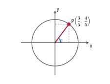
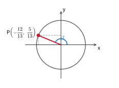
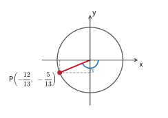
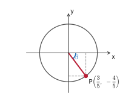
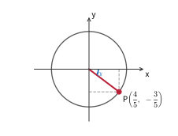
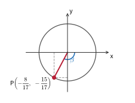

別冊練習問題 2 の解答 象限と加法定理
(1) \(\alpha\) は第1象限、\(\beta\) は第2象限の角で、\(\sin\alpha=\dfrac{4}{5}\)、\(\cos\beta=- \dfrac{12}{13}\) である。\(\sin(\alpha+\beta)\) と \(\cos(\alpha-\beta)\) の値を求めよ。
\(\cos\alpha\) を求める
\(\alpha\) は第1象限の角。\(\sin^2\alpha+\cos^2\alpha=1\) より
\[\cos\alpha=\sqrt{1-\left(\dfrac{4}{5}\right)^2}=\dfrac{3}{5}\]単位円で見ると、\(\alpha\) は第1象限で、点 \(P\) の \(y\) 座標が \(\sin\alpha=\dfrac{4}{5}\)。

\(\sin\beta\) を求める
\(\beta\) は第2象限の角。
\[\sin\beta=\sqrt{1-\left(- \dfrac{12}{13}\right)^2}=\dfrac{5}{13}\]単位円で見ると、\(\beta\) は第2象限で、点 \(Q\) の \(x\) 座標が \(\cos\beta=- \dfrac{12}{13}\)。

\(\sin(\alpha+\beta)\)
\[\sin(\alpha+\beta)=\sin\alpha\cos\beta+\cos\alpha\sin\beta=\left(\dfrac{4}{5}\right)\left(- \dfrac{12}{13}\right)+\left(\dfrac{3}{5}\right)\left(\dfrac{5}{13}\right)=- \dfrac{33}{65}\]\(\cos(\alpha-\beta)\)
\[\cos(\alpha-\beta)=\cos\alpha\cos\beta+\sin\alpha\sin\beta=\left(\dfrac{3}{5}\right)\left(- \dfrac{12}{13}\right)+\left(\dfrac{4}{5}\right)\left(\dfrac{5}{13}\right)=- \dfrac{16}{65}\]【答案】
\[\sin(\alpha+\beta)=- \dfrac{33}{65},\quad \cos(\alpha-\beta)=- \dfrac{16}{65}\]答
(2) \(\alpha\) は第3象限、\(\beta\) は第4象限の角で、\(\sin\alpha=- \dfrac{5}{13}\)、\(\cos\beta=\dfrac{3}{5}\) である。\(\sin(\alpha+\beta)\) と \(\cos(\alpha-\beta)\) の値を求めよ。
\(\cos\alpha\) を求める
\(\alpha\) は第3象限の角。\(\sin^2\alpha+\cos^2\alpha=1\) より
\[\cos\alpha=-\sqrt{1-\left(- \dfrac{5}{13}\right)^2}=- \dfrac{12}{13}\]単位円で見ると、\(\alpha\) は第3象限で、点 \(P\) の \(y\) 座標が \(\sin\alpha=- \dfrac{5}{13}\)。

\(\sin\beta\) を求める
\(\beta\) は第4象限の角。
\[\sin\beta=-\sqrt{1-\left(\dfrac{3}{5}\right)^2}=- \dfrac{4}{5}\]単位円で見ると、\(\beta\) は第4象限で、点 \(Q\) の \(x\) 座標が \(\cos\beta=\dfrac{3}{5}\)。

\(\sin(\alpha+\beta)\)
\[\sin(\alpha+\beta)=\sin\alpha\cos\beta+\cos\alpha\sin\beta=\left(- \dfrac{5}{13}\right)\left(\dfrac{3}{5}\right)+\left(- \dfrac{12}{13}\right)\left(- \dfrac{4}{5}\right)=\dfrac{33}{65}\]\(\cos(\alpha-\beta)\)
\[\cos(\alpha-\beta)=\cos\alpha\cos\beta+\sin\alpha\sin\beta=\left(- \dfrac{12}{13}\right)\left(\dfrac{3}{5}\right)+\left(- \dfrac{5}{13}\right)\left(- \dfrac{4}{5}\right)=- \dfrac{16}{65}\]【答案】
\[\sin(\alpha+\beta)=\dfrac{33}{65},\quad \cos(\alpha-\beta)=- \dfrac{16}{65}\]答
(3) \(\alpha\) は第4象限、\(\beta\) は第3象限の角で、\(\sin\alpha=- \dfrac{3}{5}\)、\(\cos\beta=- \dfrac{8}{17}\) である。\(\sin(\alpha+\beta)\) と \(\cos(\alpha-\beta)\) の値を求めよ。
\(\cos\alpha\) を求める
\(\alpha\) は第4象限の角。\(\sin^2\alpha+\cos^2\alpha=1\) より
\[\cos\alpha=\sqrt{1-\left(- \dfrac{3}{5}\right)^2}=\dfrac{4}{5}\]単位円で見ると、\(\alpha\) は第4象限で、点 \(P\) の \(y\) 座標が \(\sin\alpha=- \dfrac{3}{5}\)。

\(\sin\beta\) を求める
\(\beta\) は第3象限の角。
\[\sin\beta=-\sqrt{1-\left(- \dfrac{8}{17}\right)^2}=- \dfrac{15}{17}\]単位円で見ると、\(\beta\) は第3象限で、点 \(Q\) の \(x\) 座標が \(\cos\beta=- \dfrac{8}{17}\)。

\(\sin(\alpha+\beta)\)
\[\sin(\alpha+\beta)=\sin\alpha\cos\beta+\cos\alpha\sin\beta=\left(- \dfrac{3}{5}\right)\left(- \dfrac{8}{17}\right)+\left(\dfrac{4}{5}\right)\left(- \dfrac{15}{17}\right)=- \dfrac{36}{85}\]\(\cos(\alpha-\beta)\)
\[\cos(\alpha-\beta)=\cos\alpha\cos\beta+\sin\alpha\sin\beta=\left(\dfrac{4}{5}\right)\left(- \dfrac{8}{17}\right)+\left(- \dfrac{3}{5}\right)\left(- \dfrac{15}{17}\right)=\dfrac{13}{85}\]【答案】
\[\sin(\alpha+\beta)=- \dfrac{36}{85},\quad \cos(\alpha-\beta)=\dfrac{13}{85}\]答